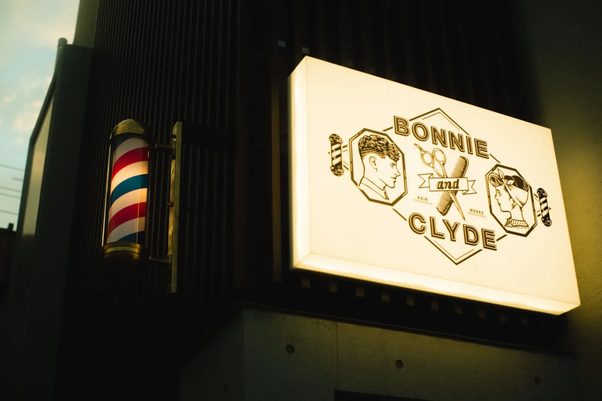
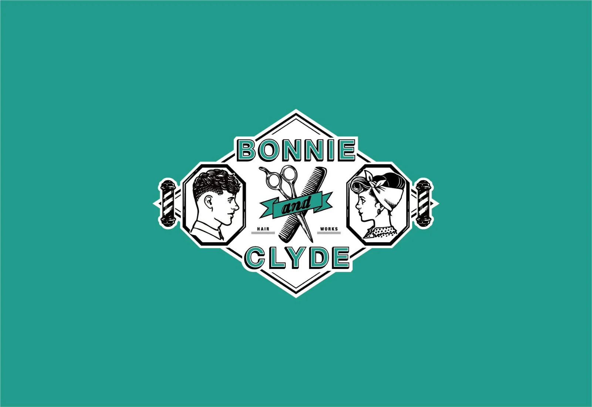
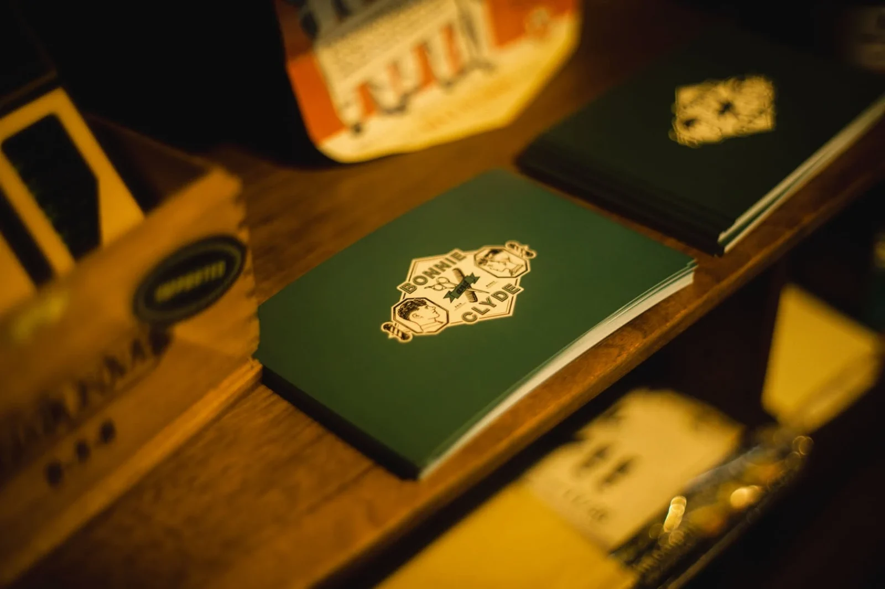
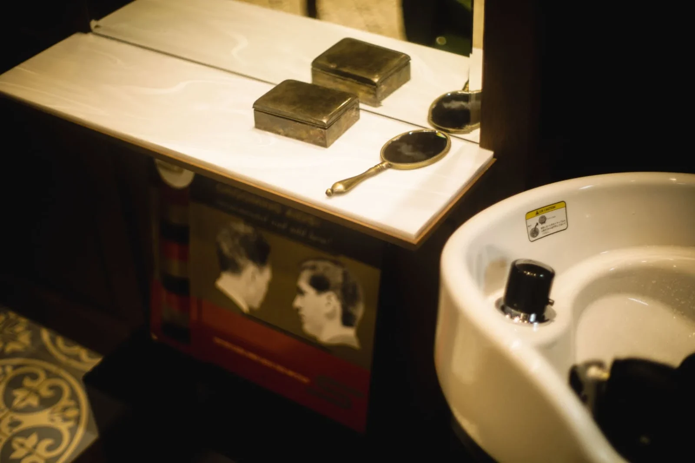
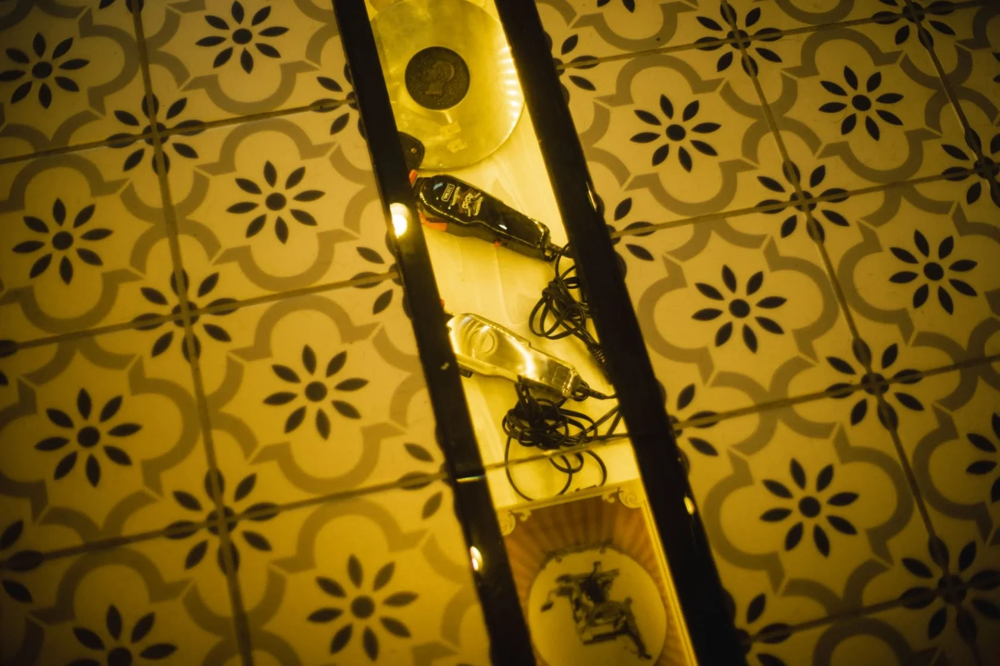
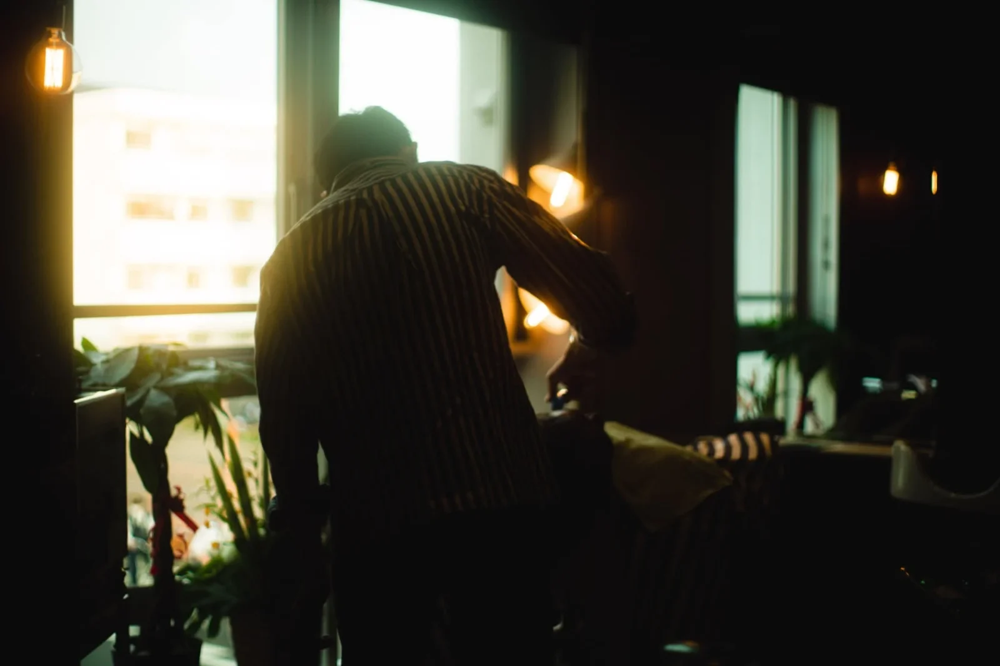

ブランディング / 下北沢
Bonnie and Clyde hairworks

PROJECT INFORMATION
公式サイトを見る ↗（新しいタブで開く）下北沢のバーバー「Bonnie and Clyde hairworks」。ロゴからショップカード、名刺、看板まで、店のブランディング全般を担当しました。
01 / 背景とテーマ
輪郭を与える
床屋らしいヴィンテージ感と、いまの表現とのバランスをとりながら、「男性も女性も、どちらも通える床屋」であることをめざしました。店名にもなっている「ボニーとクライド」をモチーフに、ひと目で覚えてもらえる世界観をつくっています。
02 / SCHEMAの担当範囲
全体を整える
SCHEMAは企画・設計・アートディレクション・構築を担当。ロゴを軸に、ショップカード、名刺、看板までを一貫したデザインでそろえました。Webサイトは、SCHEMAの大学生インターンがベースデザインを手がけています。
03 / 取り組みの視点
枠組みをひらく
店頭の看板の一部をチョークボードにして、近所の人との会話が生まれるように企画しました。髪を切りに来るだけでなく、いろいろな業種の人が、店を通じて出会える場所になることを思い描いています。

THE PLACE
店について


店舗デザインは monotrum によるもの。オーナーの世界観や空気感を大切にした、居心地のよい空間です。BONUS TRACK や SHIMOKITA COLLEGE など、注目が集まる下北沢のまちにあります。
東京・下北沢


- 企画・設計・アートディレクション・構築
- SCHEMA
- Webサイト ベースデザイン
- SCHEMA 大学生インターン
- 店舗デザイン
- monotrum ↗（新しいタブで開く）